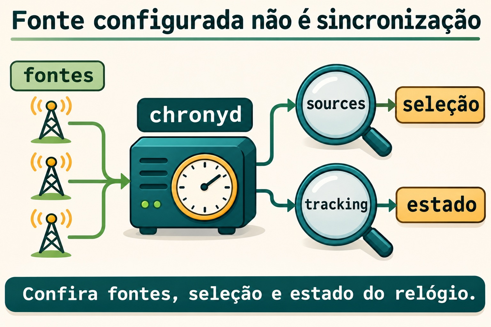

Aula 14.4 · Hora certa
Você já usou horários para agendar trabalhos e investigar logs. Agora vai separar o instante do relógio, o fuso que o apresenta e a fonte que o sincroniza. O objetivo é diagnosticar sem plantar saltos de hora no servidor.
Núcleo desta aula: fonte configurada, fonte selecionada e relógio sincronizado são evidências diferentes. Mude apenas a apresentação por processo nos testes de fuso. O resto é aprofundamento.
| Ficha | |
|---|---|
| Módulo | M14 · Agendamento, logs e hora, aula 4 de 5 |
| Quando | Semana 20 |
| Ao final | Você interpreta chrony, compara fusos e mede uma fonte sem ajustar o relógio |
| Pré-requisitos | Aula 14.3; VMs próprias do curso, python3, student, sudo e console |
| Tempo | Cerca de 90 minutos |
| Snapshots | m14a4-inicio e m14a4-fim nas VMs 201 e 202 |
1 · Aquecimento
Responda antes de consultar o relógio.
- Por que o boot e o intervalo fazem parte da busca no journal?
- Por que a configuração salva de um serviço não comprova comportamento correto?
- Por que mudar a hora pode afetar um timer de calendário?
2 · Por que importa
Dois hosts parecem registrar o mesmo incidente em ordens opostas. Um usa outro fuso; o outro perdeu sincronização. Comparar apenas a hora impressa confunde apresentação com instante. Autenticação, validade de certificados e cronologia de incidentes também dependem de tempo coerente.
Não corrija um desvio aparente digitando uma hora de memória. Primeiro descubra o mecanismo ativo, suas fontes e o estado de sincronização.
3 · Modelo mental
O instante é o ponto na linha do tempo. O fuso é a legenda do relógio na parede. A fonte NTP ajuda o mecanismo a manter o instante; trocar a legenda não corrige um mecanismo atrasado.
fonte -> medições -> seleção -> relógio -> apresentação no fuso
Ponte Windows
| Conceito | Linux |
|---|---|
| Serviço de hora | chronyd ou o cliente realmente ativo |
| Fonte configurada | Diretivas server e pool |
| Estado e fontes | chronyc tracking, chronyc sources |
| Fuso do sistema | timedatectl status |
4 · O essencial
Um dono para o relógio
Não coloque dois clientes tentando disciplinar o mesmo relógio. chrony e systemd-timesyncd são alternativas de cliente, não serviços que você habilita juntos para melhorar a precisão. A migração exige registrar a configuração e planejar a troca.
Medir, selecionar e sincronizar
chronyc sources -v mostra fontes e indicadores de seleção. O marcador * identifica a fonte selecionada. Uma fonte listada não está necessariamente utilizável. chronyc tracking descreve como o relógio está sendo acompanhado.
Reach é um histórico de alcance representado em octal, não uma porcentagem. Leia também a idade da última resposta, o estado da fonte e o estado de salto do tracking. Não transforme um único número em diagnóstico completo.


Fuso é apresentação
A variável TZ aplicada a um comando muda a apresentação daquele processo. O exemplo do lab usa o mesmo timestamp numérico para três apresentações. Ele não edita o fuso global nem altera a hora do sistema.
Medição sem correção
chronyd -Q mede e informa o desvio sem corrigir o relógio. -q, em minúscula, ajusta uma vez e tem outra finalidade. Neste lab use somente a opção maiúscula, com arquivo isolado e tempo máximo.

Rocky × Debian
| Item | Rocky 9 | Debian 13 |
|---|---|---|
| Pacote | chrony | chrony |
| Unidade | chronyd.service | chrony.service |
| Arquivo principal | /etc/chrony.conf | /etc/chrony/chrony.conf |
| Instalação padrão | Cliente chrony comum | Confira se timesyncd é o cliente atual |
5 · Lab guiado
O preparo abaixo instala chrony como cliente único nas VMs do curso. Se já existir outro cliente ou fonte personalizada além do timesyncd padrão, pare para planejar a migração. A instalação pode substituir timesyncd; não aplique esse roteiro em um servidor de produção. A sincronização normal pode corrigir um desvio existente, portanto faça a troca com snapshot, console e janela definida.
Passo 1 · Proteger e identificar
Palpite: o nome da unidade de chrony é igual nas duas distros?
No host Proxmox:
qm snapshot 201 m14a4-inicio
qm snapshot 202 m14a4-inicioNas VMs:
test ! -e "$HOME/m14a4"
mkdir -m 700 "$HOME/m14a4"
timedatectl status | tee "$HOME/m14a4/timedatectl.inicio"
systemctl is-active chronyd chrony systemd-timesyncd | tee "$HOME/m14a4/clients.inicio"
readlink -f /etc/localtime | tee "$HOME/m14a4/timezone.inicio"Confirme que esta é a VM de laboratório e que a troca foi planejada antes de executar a instalação. Na Rocky:
sudo dnf install -y chrony
sudo systemctl enable --now chronydNa Debian, com apenas timesyncd padrão ou chrony como cliente anterior:
if systemctl is-active --quiet systemd-timesyncd; then
sudo systemctl disable --now systemd-timesyncd
fi
sudo apt install -y chrony
sudo systemctl enable --now chronyNão configure uma fonte inventada. Preserve fontes autorizadas já existentes; em instalação nova, leia a configuração que o pacote forneceu e confira sua autorização no ambiente antes de seguir. O cliente chrony fica como estado final do curso.
test -x /usr/sbin/chronyd
command -v chronyc python3
systemctl is-active chronyd chrony systemd-timesyncdSaída esperada: cliente chrony ativo na unidade da distro e nenhum segundo cliente ativo ajustando o relógio. Unidades inexistentes ou inativas podem aparecer nas outras posições.
Verifique: se esse preparo não estiver pronto, pare antes dos testes. Não use timedatectl set-ntp sem saber qual cliente ele vai selecionar. timedatectl set-timezone seria uma alteração global do fuso; esta aula usa apenas TZ por processo e não executa essa mudança.
Passo 2 · Ler a evidência do cliente
Palpite: uma fonte configurada já está selecionada?
sudo chronyc -n sources -v | tee "$HOME/m14a4/sources.inicio"
sudo chronyc tracking | tee "$HOME/m14a4/tracking.inicio"
sudo chronyc activitySaída esperada: valores reais do cliente. Identifique se há fonte selecionada e se o tracking informa sincronização; se não houver, registre a condição em vez de inventar uma amostra normal.
Verifique: relacione endereço da fonte, seleção e estado. Serviço ativo não é sinônimo de relógio sincronizado.
Passo 3 · Comparar o mesmo instante
Palpite: os três comandos abaixo vão representar três instantes diferentes?
STAMP=$(date +%s)
printf '%s\n' "$STAMP" > "$HOME/m14a4/epoch"
TZ=UTC date -d "@$STAMP" '+%Y-%m-%dT%H:%M:%S%z'
TZ=Europe/Rome date -d "@$STAMP" '+%Y-%m-%dT%H:%M:%S%z'
TZ=America/Sao_Paulo date -d "@$STAMP" '+%Y-%m-%dT%H:%M:%S%z'
readlink -f /etc/localtimeSaída esperada: apresentações com deslocamentos próprios para o mesmo timestamp. O fuso global continua igual ao inicial.
Verifique: confira o deslocamento, não só os dígitos da hora. As regras sazonais dependem da data do instante consultado.
Decida 1
| Opção | Dois horários impressos diferem |
|---|---|
| A | Alterar imediatamente o relógio |
| B | Comparar instante, deslocamento e fonte de sincronização |
| C | Escolher o horário visualmente mais próximo |
Escolha B. Uma diferença de apresentação não prova desvio do relógio.
Passo 4 · Escrever uma candidata isolada
Palpite: validar a sintaxe já consulta a fonte?
Escolha um IP NTP autorizado do ambiente, obtido do inventário real de fontes. Não use um endereço aleatório nem presuma que o gateway oferece NTP.
read -r -p 'Authorized NTP IP: ' NTP_IP
python3 -c 'import ipaddress,sys; print(ipaddress.ip_address(sys.argv[1]))' "$NTP_IP"Se a validação do IP falhar, pare e corrija a entrada antes de criar o arquivo.
Na debian-lab, o perfil AppArmor do chronyd só deixa ler configurações dentro de /etc/chrony/. Uma candidata em $HOME dá Permission denied. Por isso, as candidatas ficam numa pasta definida por C. Se abrir um terminal novo, defina C de novo.
C="$HOME/m14a4"
if command -v apt >/dev/null; then
# guarda: cria a pasta só na debian-lab
C=/etc/chrony/m14a4
sudo install -d -o "$USER" -g "$USER" -m 755 "$C"
fi
echo "$C"printf 'server %s iburst\nport 0\ncmdport 0\n' "$NTP_IP" > "$C/chrony.conf"
/usr/sbin/chronyd -p -f "$C/chrony.conf"Saída esperada: a candidata é interpretada sem iniciar ajuste do relógio. Não há driftfile, comando de ajuste nem arquivo global alterado.
Verifique: identifique o IP escolhido e a ausência de diretivas que exigem privilégios para esse teste.
Passo 5 · Medir sem ajustar
Palpite: o que torna esta execução diferente de um ajuste único do relógio?
Execute como student, sem sudo. A opção é -Q, maiúscula.
/usr/sbin/chronyd -Q -t 15 -f "$C/chrony.conf"Saída esperada: a ferramenta termina com uma medição quando obtém amostras utilizáveis, ou encerra por prazo se não consegue. Nenhuma correção de relógio é feita por essa execução.
Verifique: compare a medição com o estado do cliente ativo. A consulta adicional não substituiu o daemon nem tornou aquela candidata persistente.
Decida 2
| Opção | A fonte não respondeu dentro do prazo |
|---|---|
| A | Verificar IP, serviço NTP e caminho UDP autorizado |
| B | Transformar o host em servidor de hora sem fonte |
| C | Trocar a hora manualmente |
Escolha A. Ausência de amostra utilizável não informa uma hora correta para digitar.
Passo 6 · Correlacionar journal e boot
Palpite: apresentar o journal em UTC apaga o fuso usado pelo sistema?
logger -t m14a4 "M14A4 epoch=$STAMP"
sudo journalctl -t m14a4 --since '-5 minutes' -o short-iso --no-pager
sudo journalctl --utc -t m14a4 --since '-5 minutes' -o short-iso --no-pager
sudo systemctl rebootDepois de reconectar:
timedatectl status
sudo chronyc tracking
sudo chronyc -n sources -v
readlink -f /etc/localtimeSaída esperada: cliente normal volta e o fuso permanece igual. O journal pode apresentar o mesmo evento em UTC sem reescrever seu instante.
Verifique: a candidata isolada não foi instalada no daemon. O estado persistente conferido é o do cliente chrony ativado no preparo.
6 · Quebre e conserte
Quebra 1 · Nome de fuso inválido
Sintoma: o nome digitado não corresponde a uma zona instalada.
Investigação: compare o caminho errado com a lista disponível.
test -e /usr/share/zoneinfo/Europ/Rome
timedatectl list-timezones | grep '^Europe/Rome$'Causa: erro no identificador. Uma variável TZ inválida pode receber interpretação alternativa; uma saída impressa não valida sozinha o nome.
Conserto: use a zona existente apenas no comando de apresentação.
TZ=Europe/Rome date -d "@$(cat "$HOME/m14a4/epoch")" -IsVerifique: o fuso global continua igual ao registrado.
Prevenção: selecione nomes da base instalada.
Quebra 2 · Candidata com diretiva inexistente
Sintoma: a candidata deixa de passar no leitor de configuração.
Investigação: plante a linha somente na cópia privada.
cp "$C/chrony.conf" "$C/chrony.good"
printf 'm14_invalid yes\n' >> "$C/chrony.conf"
/usr/sbin/chronyd -p -f "$C/chrony.conf"Causa: a diretiva não é reconhecida. O cliente ativo continua com sua configuração original.
Conserto: restaure cp "$C/chrony.good" "$C/chrony.conf".
Verifique: a leitura com -p volta a passar.
Prevenção: valide antes de planejar qualquer substituição da configuração ativa.
Quebra 3 · Fonte sem servidor
Sintoma: uma consulta isolada não consegue amostra utilizável.
Investigação: confirme que não há servidor NTP no endereço de loopback reservado ao defeito e crie outra candidata. Não toque no cliente ativo.
sudo ss -lunp 'sport = :123'
printf 'server 127.0.0.2 iburst\nport 0\ncmdport 0\n' > "$C/chrony.bad-source"
/usr/sbin/chronyd -Q -t 5 -f "$C/chrony.bad-source"Causa: esse destino não oferece NTP no lab. Não é um problema de apresentação do fuso.
Conserto: volte à candidata com a fonte autorizada e confirmada.
Verifique: o cliente ativo continua sendo consultável com chronyc tracking.
Prevenção: teste disponibilidade e autorização da fonte; não use somente a existência da linha no arquivo.
Limpeza
As execuções -Q terminam por conta própria. O cliente chrony instalado permanece intencionalmente ativo; a configuração candidata nunca substituiu a dele. Nenhuma variável de fuso foi exportada globalmente e nenhum daemon concorrente deve ficar iniciado. Guarde os arquivos privados como evidência.
readlink -f /etc/localtime
sudo chronyc tracking
sudo chronyc -n sources -vNa debian-lab, remova também a pasta das candidatas: sudo rm -rf /etc/chrony/m14a4.
Compare o fuso com timezone.inicio. A sincronização continua sob o único cliente instalado e ativado no preparo desta aula.
7 · Armadilhas
| Erro | Faça | Motivo |
|---|---|---|
| Hora visual diferente significa relógio errado | Comparar instante e deslocamento | Fusos apresentam o mesmo instante |
| Serviço ativo significa sincronizado | Ler fontes e tracking | Pode não haver fonte utilizável |
Confundir -q e -Q | Conferir a opção antes de executar | Uma ajusta; a outra mede |
| Habilitar dois clientes | Planejar um proprietário único | Evita ajustes concorrentes |
8 · Quiz
- Fuso e instante são a mesma coisa?
- O que mostra
sourcesalém da lista de fontes? - Reach é uma porcentagem?
- Qual opção do chronyd mede sem corrigir?
- Por que não instalar outro cliente silenciosamente?
- Como comparar eventos de hosts com fusos diferentes?
9 · Cola
| Tarefa | Comando |
|---|---|
| Estado geral | timedatectl status |
| Fontes e seleção | chronyc -n sources -v |
| Acompanhamento | chronyc tracking |
| Journal em UTC | sudo journalctl --utc -t m14a4 |
Flashcards: crie cinco cartões sobre instante, fuso, seleção, tracking e medição sem ajuste. Revise em D+1, D+3, D+7 e D+21.
10 · Checklist e fechamento
- [ ] Identifiquei o único cliente ativo.
- [ ] Comparei o mesmo instante em três fusos sem mudar o relógio.
- [ ] Testei apenas candidatas isoladas com medição sem ajuste.
Último exercício: escreva como distinguir fuso incorreto, fonte indisponível e cliente ainda sem sincronização.
Reboot de conferência: reinicie as duas VMs e confira cliente, fontes e fuso preservados, sem usar um ajuste manual para produzir uma tela esperada.
sudo systemctl rebootNo host Proxmox:
qm snapshot 201 m14a4-fim
qm snapshot 202 m14a4-fim11 · Na vida real
Em um host autorizado, leia estado, fontes, fuso e apresentação UTC de um intervalo conhecido do journal. Não ajuste a hora, não troque o cliente e não force um salto nesta missão. Registre o que demonstra sincronização e o que demonstra apenas apresentação.
12 · Aprofundar quando quiser
- chronyd(8), chronyc(1) e chrony.conf(5): cliente, fontes e medição.
- timedatectl(1): consulta e alterações globais que não são usadas neste lab.
DeepTutor (http://10.1.0.149:3782, KB "Curso Linux Sysadmin"):
!explica Separe instante, fuso, fonte NTP e sincronização do relógio.!feynman Vou explicar por que um serviço de hora ativo pode não estar sincronizado. Critique minha explicação.!quiz Crie seis diagnósticos de hora sem alterar o relógio real do servidor.
Gabarito comentado
Aquecimento
- Eles delimitam o conjunto pesquisado e podem excluir o evento.
- A fonte pode estar indisponível mesmo com uma configuração válida.
- A agenda civil depende dos horários calculados a partir do relógio e do fuso.
Quiz
- Não; um é apresentação, o outro é o ponto na linha do tempo.
- Estado de seleção, alcance e informações das amostras.
- Não; é um histórico em octal.
-Q, maiúscula.- A instalação pode substituir ou competir com o proprietário atual do relógio.
- Normalize a apresentação e confira o estado dos relógios, não apenas o texto da hora.
← Aula 14.3 · journald e rsyslog · Índice de aulas · Plano do curso: 14.5 em diante →